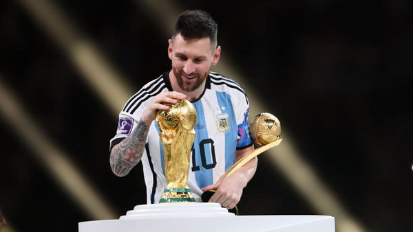
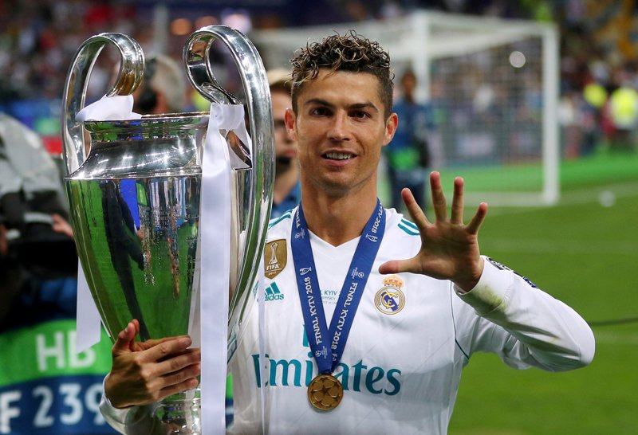
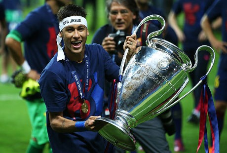
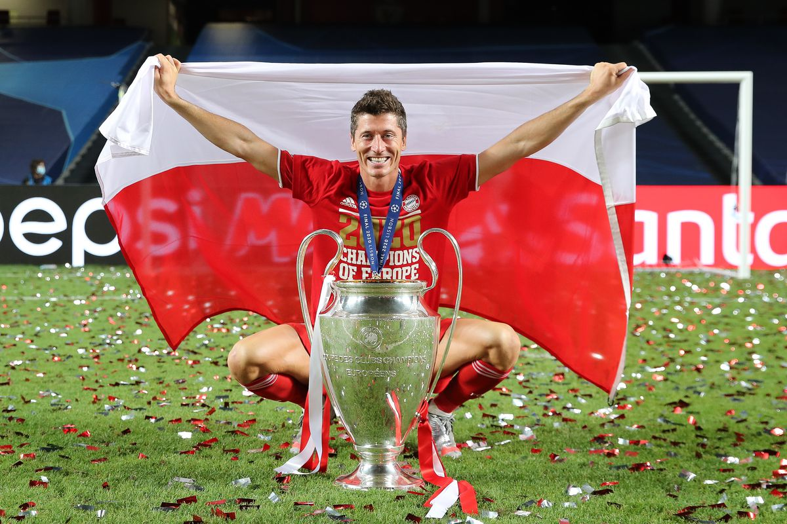
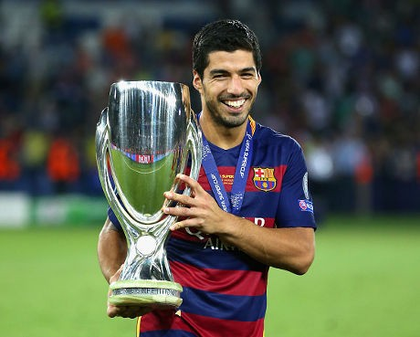

|
|
Sepak bola adalah olahraga paling favorit di Indonesia, hampir seluruh rakyat indonesia menyukai sepak bola
Pemain terbaik dunia sering menjadi perdebatan di kalangan pecinta Sepak Bola, dari berbagai liga sepak bola telah lahir pemain-pemain berbakat yang menjadi sorotan banyak orang
Untuk mendapat predikat sebagai pemain terbaik pasti ditentukan melalui penampilan, prestasi, dan konsistensi selama berkarir
Berikut adalah daftar Pemain Bola Terbaik yang masih aktif bermain versi RHAA.
-
LIONEL MESSI 
Lionel Messi merupakan pesepakbola berkebangsaan Argentina, yang sempat membela banyak klub besar dan menampilkan permainan yang ciamik bahkan sampai sekarang di usia yang terbilang sudah tidak muda lagi
Messi dikenal karena dribel nya yang lincah, serta passing dan tembakan nya yang akurat, Messi juga termasuk pemain yang bisa berada di banyak posisi
Kini Messi telah mencetak lebih dari 750 gol dalam kariernya dan messi telah mendapatkan 43 trofi klub dan hampir memenangi semua trofi bergengsi seperti 1x World Cup, 4x UEFA Champions League, 1x Copa America, 10x Laliga, 2x Ligue 1 serta penghargaan individu 7x Ballon d'Or dan tentu masih banyak lainnya, Messi juga dikatakan sebagai pesepakbola terbaik sepanjang masa, dan saya rasa itu FAKTA
Berikut adalah tim yang pernah dibela oleh Lionel Messi:
- Timnas Argentina (2005 - sekarang)
- FC Barcelona (2003 - 2021)
- Paris Saint-Germain (2021 - 2023)
- Inter Miami (2023 - sekarang)
-
CRISTIANO RONALDO 
Cristiano Ronaldo pesepakbla berkebangsaan Portugal yang berposisi sebagai penyerang, karirnya melonjak saat ia mulai bergabung ke Manchester United pada usia 18 tahun, ia memenangi banyak trofi disitu
Ia sudah membela berbagai klub profesional dan masaih terus terusan mencatatkan namanya di papan skor bahkan sampai sekarang di usia nya yang sudah 38 tahun, Ronaldo sudah memiliki 5x UEFA Champions League, 1x EURO, 10x Laliga, 3x Premier League serta memenangi penghargaan individu 5x Ballon d'Or dan masih banyak lainnya
Ronaldo juga disebut sebagai Icon Sepak Bola, terbukti dengan Selebrasi Khas nya yang sangat fenomenal
Berikut adalah tim yang pernah dibela oleh Cristiano Ronaldo:
- Timnas Portugal (2001 - sekarang)
- Sporting Lisbon (1997 - 2003)
- Manchester United (2003 - 2009)
- Real Madrid (2009 - 2018)
- Juventus (2018 - 2021)
- Manchester United (2021 - 2022)
- Al-Nassr (2023 - sekarang)
-
NEYMAR JR 
Neymar jr pesepakbola berkebangsaan Brazil ini dikenal dengan ciri khas skill nya dalam bermain bola nya yang indah dilihat, pada tahun 2017, Neymar menjadi pesepakbola termahal di dunia setelah PSG mengeluarkan lebih dari Rp3,7 triliun untuk mengontraknya dari Barcelona
Neymar sempat membela beberapa klub seperti Barcelona, PSG, dan sekarang berada di Al Hilal dan Neymar telah memenangkan trofi 1x UEFA Champions League, 2x Laliga, 3x Copa del Rey, 5x Ligue 1, namun sayang, dia belum pernah memenangkan Copa America dan World Cup
Namun tanpa itupun Neymar diakui sebagai salah satu pemain terbaik dunia setelah Messi dan Ronaldo
Berikut adalah tim yang pernah dibela oleh Neymar JR:
- Timnas Brazil (2009 - sekarang)
- Santos (2009 - 2013)
- FC Barcelona (2013 - 2017)
- Paris Saint-Germain (2017-2023)
- Al-Hilal (2023 - sekarang)
-
ROBERT LEWANDOWSKI 
Lewandowski pria kelahiran 21 Agustus 1988 yang berkebangsaan Polandia serta berposisi sebagai striker ini merupakan salah satu striker tajam dunia karena telah menorehkan 294 gol bersama Bayern Munchen dan sekarang telah bergabung ke Barcelona dan masih terus menampilkan permainan yang gemilang di liga spanyol tersebut
Namun untuk penampilan di timnas nya sendiri lewandowski dinilai kurang perform karena komposisi skuad di timnas nya yang dilihat masih kurang dibandingkan tim-tim eropa yang lainnya, namun tidak sedikit trofi yang didapatnya 8x Bundesliga, 5x Super Cup DFL, 1x Laliga dan masih banyak lainnya
Berikut adalah tim yang pernah dibela oleh Robert Lewandowski:
- Timnas Polandia (2007 - sekarang)
- Znicz Pruszkow (2006 - 2008)
- Lech Poznan (2008 - 2010)
- Borussia Dortmund (2010 - 2014)
- Bayern Munchen (2014 - 2022)
- FC Barcelona (2022 - sekarang)
-
LUIS SUAREZ 
Luis Suarez seorang sosok yang cukup kokntroversial, suarez beberapa kali pernah berselisih dengan pemain lain, namun, skill dan insting nya dalam mencetak gol dari seorang Suarez tak perlu kita ragukan lagi, karena saat ini Suarez adalah top skor sepanjang masa dari timnas Uruguay dengan torehan 58 gol
Suarez juga pernah membawa Barcelona juara UEFA Champions League bersama Messi dan Neymar di tahun 2015, dana Suarez berhasil menciptakan gol ke gawang Buffon pada saat laga final melawan Juventus, dan saata itu Barcelona meraih Treble Winners
Prestasi individu dari Suarez adalah ia pernah menjadi top skor Premier League 2014, dan pemain terbaik Premier League 2014 pada saat membela Liverpool, dan juga meraih top skor Laliga 2016 bersama Barcelona
Berikut adalah tim yang pernah dibela oleh Luis Suarez:
- Timnas Uruguay (2007 - sekarang)
- Nacional (2005 - 2006)
- Groningen (2006 - 2007)
- Ajax (2007 - 2011)
- Liverpool (2011 - 2014)
- FC Barcelona (2014 - 2020)
- Atletico Madrid (2020 - 2022)
- Nacional (2022 - 2023)
- Gremio (2023 - sekarang)
Itulah daftar pemain sepakbola terbaik versi RHAA, saya ingatkan kembali bahwa yang saya masukkan dalam daftar adalah pemain bola yang masih aktif bermain yang belum pensiun
dan pemain pemain diatas adalah pemain versi saya sendiri
|